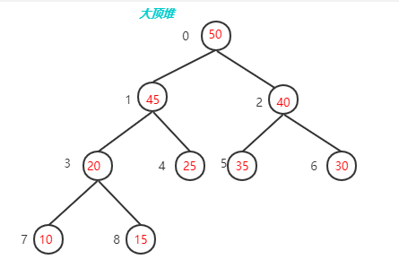

优先队列简介
- 概念介绍
- 引入大顶堆 (各种堆), 对比数组o(n), O(log(n))
- 完全二叉树, 其它树的区别
- 数组存储, 下标索引
- 数据结构介绍
- 方法图解 (插入, 删除, 堆化)
- 堆化时间复杂度O(n)证明
- 代码示例(c语言版)
- 空穴方式优化
- 应用:优先队列常用于操作系统的任务调度，也是贪心算法的重要组成部分。
https://blog.csdn.net/u014386899/article/details/108141606
[TOC]
什么是优先队列
优先队列（priority queue）是计算机科学中的一类抽象数据类型(Abstract Data Type)。优先队列中的每个元素都有各自的优先级，优先级最高的元素最先得到服务；优先级相同的元素按照其在优先队列中的顺序得到服务。优先队列通常使用"二叉堆"（binary heap）实现。二叉堆能保证树中最大的元素处在堆顶，这与优先队列要求优先级最高的元素排在队首相似，因此可以使用二叉堆来实现优先队列。
支持的操作
优先队列一般至少需要支持下述操作：
- 插入元素（push），时间复杂度：$O(\log n)$。
- 取出元素（pop），时间复杂度：$O(\log n)$。
- 查看元素（peek），时间复杂度：$O(1)$
其它可选的操作：
- 检查优先级高的一批元素
- 清空优先队列
- 批插入一批元素
- 合并多个优先队列
- 调整一个元素的优先级
特性
优先队列的实现常选用二叉堆(Binary Heap)，在数据结构中，优先队列一般也是指堆。
堆的两个性质：
- 结构性：堆是一颗除底层外被完全填满的二叉树，底层的节点从左到右填入，这样的树叫做完全二叉树。
- 堆序性：由于我们想很快找出最小元，则最小元素应该在根上，任意节点都小于它的子节点，这就是小顶堆（Min-Heap）；如果是查找最大元，则最大元素应该在根上，任意节点都要大于它的子节点，这就是大顶堆(Max-Heap)。


内存模型
二叉堆通常用数组来表示，因为一棵高度为 $h$ 的完全二叉树有 $2^h$ 到 $2^{(h+1)}-1$个节点，这样存放一个二叉堆就不会太浪费空间（不需要额外的指针），而且一旦知道高度，就可以知道节点数的范围。
我们使用层序遍历的方式将二叉树的节点存储在数组中，由于二叉堆是完全二叉树，所以可以将树型结构映射到线性数组空间之中且不产生空间浪费，反而因为不需要存储指针元素节省了空间。
但这样又如何索引其父节点与子节点呢（根节点的 $index$ 为0）？
假设一个节点 $index$ 为 $i$ ，则其：
-
左子节点：$2i + 1$
-
右子节点：$2i+2$
-
父节点：$(i-1)/2$
这个数组从逻辑上说就是一个堆结构，我们用公式重新描述堆的定义：
-
大顶堆：$arr[i] \geq arr[2i+1]$ && $arr[i] \geq arr[2i+2]$
-
小顶堆：$arr[i] \leq arr[2i+1]$ && $arr[i] \leq arr[2i+2]$
数据结构
struct my_heap {
int *vec;
int size;
int capacity;
}